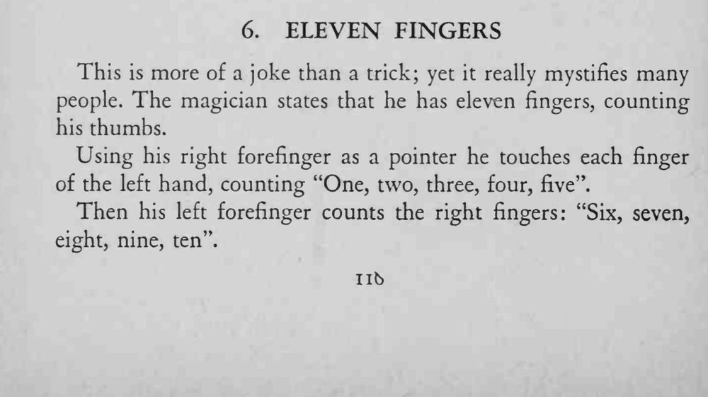
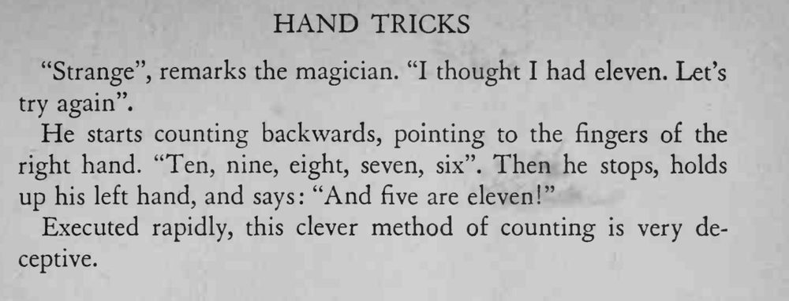

魔术师声称自己有十一根手指，先数出十根，再倒着数一遍，最后举起左手说再加上这五根正好是十一根。
数得要快而连贯，观众来不及算清就已经被绕进去了。


This is more of a joke than a trick; yet it really mystifies many people. The magician states that he has eleven fingers, counting his thumbs. Using his right forefinger as a pointer he touches each finger of the left hand, counting "One, two, three, four, five'*. Then his left forefinger counts the right fingers: "Six, seven, eight, nine, ten". "Strange", remarks the magician. "I thought I had eleven. Let's try again". He starts counting backwards, pointing to the fingers of the right hand. "Ten, nine, eight, seven, six". Then he stops, holds up his left hand, and says: "And five are eleven!" Executed rapidly, this clever method of counting is very deceptive.